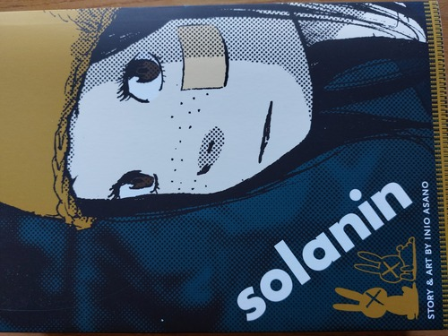

Posted on Jul 24, 2026
Ricordo con nostalgia i tempi in cui mi piaceva leggere i manga di Adachi Mitsuru, di cui possiedo una piccola collezione; ero ancora romantico e sognante. In un certo senso, nella mia prospettiva: questo manga è una continuazione della stessa narrazione ma per il genere giovani adulti (in italiano Young Adults).
Siccome non sono piú sognante com’ero: non m’è riuscito d’infondere quest’opera d’immaginazione, come facevo allora; ho letto lo stesso con piacere, anche se: tolta l’immaginazione sembra che succeda poco. In realtà di cose ne succedono, per questo tipo di storia.
Nel momento in cui l’ho acquistato: l’edizione piú economica era quella in lingua inglese, purtroppo adattata per i lettori USAriani; comprendo che si debba inseguire il mercato piú grosso; non posso sapere com’è l’originale giapponese, ma il tono dei dialoghi in inglese non mi sembra quello giusto.
